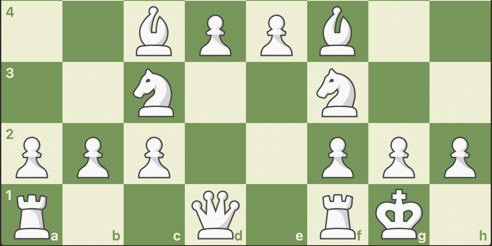

The diagonal warriors of the chess board, the Bishops!
Unlike the Pawn and Knights, the Bishop cannot be moved immediatly at the start of a chess game, but rather a Pawn must move to uncover its diagonal so that it can be developed. Nontheless, the Bishop is another piece that should be developed as quick as possible to the center board in order to gain space and control more squares.
Alongside the knights and pawns, the bishops are able to create a large and stable center where most of the squares are controlled, forcing the opponent to utilize pawn breaks in the center or pawns on the king/queenside (flank pawns).
Standard development with the pieces we have covered thus far typically goes as follows:
With just these pieces, if you do everything right and there are no interferences from your opponent, you will have an advantageous center looking like this:
The bishop moves only in diagonals, and the reason why developing to the center is importnat as
that allows it to see more squares, which can include ones in the enemy territory.
However, because of the tiled nature of the chess board,
both bishops are different:
One controls the light squares, the controls the dark ones, as shown below:
If you want to learn more about the Bishop, watch this video by chess.com!
Or click on the link below!
Let's move on with the...